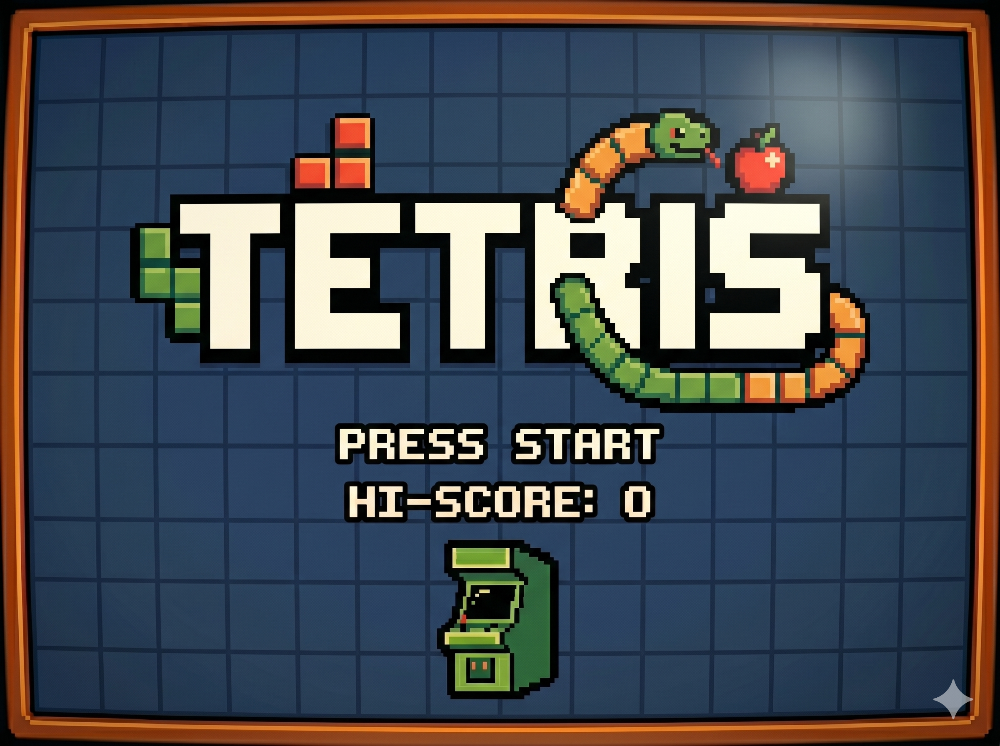
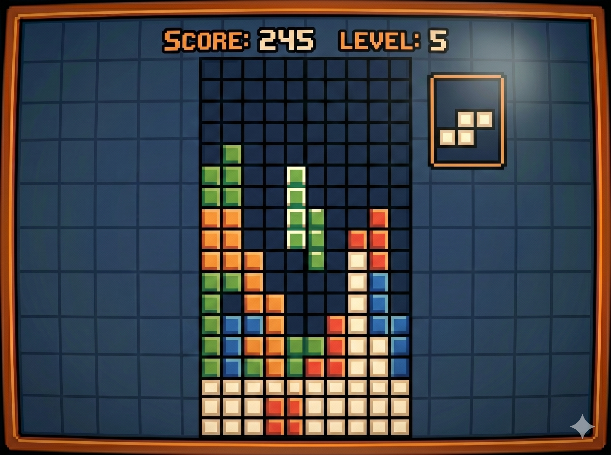

Diseñado por Alekséi Pázhitnov en la Unión Soviética en 1984. El nombre proviene de "tetra" (cuatro) y "tenis" (el deporte favorito del creador).
Consiste en encajar figuras geométricas compuestas por cuatro bloques que caen. Al completar una línea horizontal, esta se elimina y otorga puntos, evitando que la pantalla se llene.
Nivel: Alto. La dificultad se gestiona por niveles. Cada 10 líneas completadas, se incrementa el nivel, lo que reduce drásticamente el tiempo de caída de las piezas, dejando al jugador sin tiempo para pensar la rotación.
Usa una matriz de int[row][col]. La rotación es el reto principal, aplicando una operación matemática de intercambio de índices para girar la pieza sobre su eje central.